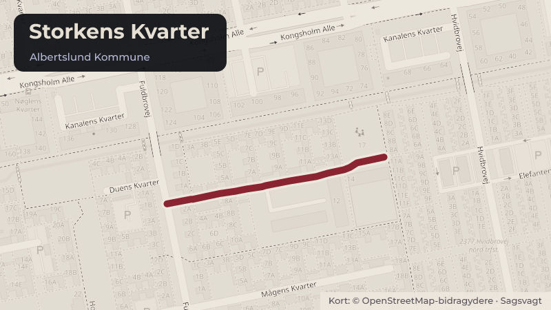

Besluttet 29. september, Økonomiudvalget, Albertslund
Tilkendegivelse af muligt salg af kommunalt areal

Kort fortalt
- Forslaget
- Kommunalbestyrelsen tilkendegiver interesse for salg af ca. 1.550 m² af matr.nr.
- Forvaltningen undersøger relevante forhold vedr. økonomi, udstykning, forsyning
- Der efterfølgende fremlægges endelig sag om salgsvilkår.
- Hvem
- Økonomiudvalget, Albertslund Kommune
- Hvornår
- Tirsdag 29. september 2026
- Status
- Besluttet. X Supplerende sagsfremstilling Tiltrådte indstillingen, idet det sikres, at der i den fremadrettede proces er en dialog med afdelingsbestyrelsen om et eventuelt salg af grunden. (Ø) undlod.Beslutningen er forkortet her. Læs hele beslutningen
Er noget forkert her? Skriv til os
Læs hele sagen Kommunens egen tekst
Indstilling
X
Direktøren for By, Kultur, Miljø & Beskæftigelse indstiller,
1. at Kommunalbestyrelsen tilkendegiver interesse for salg af ca. 1.550 m² af matr.nr.
7000o til Albertslund Boligselskab,
2. at forvaltningen undersøger relevante forhold vedr. økonomi, udstykning, forsyning,
deklarationer, planforhold, beplantning mm, herunder muligheden for at bevare en del af
arealets rekreative funktion, og
3. at der efterfølgende fremlægges endelig sag om salgsvilkår.
Sagsfremstilling
BO-VEST har på vegne af Albertslund Boligselskab anmodet om køb af et kommunalt areal på
ca. 1.550 m², der udgør en del af vejmatrikel 7000o. Arealet ønskes sammenlagt med
boligselskabets eksisterende ejendom, matr.nr. 5bd på 3.161 m², med henblik på etablering af
et seniorbofællesskab for borgere over 55 år.
BO-VEST har ved brev af 29. juni 2026 (vedlagt som bilag) fremsendt anmodningen om køb af
en del af kommunens vejmatrikel ved Storkens Kvarter. Albertslund Boligselskab ejer den
tidligere institutionsgrund, matr.nr. 5bd, hvor institutionen Storken tidligere var placeret. Den
eksisterende bygning forventes nedrevet. Formålet er at opføre et seniorbofællesskab med
mindre boliger og fællesfaciliteter.
BO-VEST har oplyst, at køb af det kommunale areal er en forudsætning for projektets
realisering, da antallet af boliger ellers reduceres væsentligt. Dette vil forringe projektets
økonomiske bæredygtighed og mulighederne for etablering af et seniorbofællesskab.
Ejerforhold
Matr.nr. 5bd ejes af Albertslund Boligselskab og udgør 3.161 m². Det kommunale areal er ca.
1.550 m² og er en del af vejmatrikel 7000o. Samlet projektareal udgør ca. 4.711 m².
Sagen indeholder kortbilag med matr.nr. 5bd, den berørte del af vejmatrikel 7000o samt et
luftfoto (bilag).
Det kommunale areal
Det kommunale areal fungerer i dag som et lokalt rekreativt udeareal, bl.a. til den årlige
bydelsfest, primært for beboerne i de omkringliggende rækkehuse i Albertslund Syd.
Arealet har forbindelse til områdets stier samt direkte adgang til en bro over kanalen.
Arealet har flisebelægning, græsarealer med buske og træer samt et opholdsareal med enkelte
legeredskaber samt borde og bænke. Den nuværende indretning er fra 2007, men virker
utidssvarende og mindre benyttet. Fitnessudstyret nedtages i sensommeren 2026, så
faciliteterne er i forsvarlig stand.
Plan- og matrikelforhold
Begge matrikler er i dag omfattet af Lokalplanerne 4.0 og 4.11 og udlagt til offentlige formål.
Området kan dermed anvendes til grønne områder, institutioner, klubaktiviteter for børn og
unge, sports- og fritidsaktiviteter, samt kollektive anlæg til brug for området og andre
beboerorienterede funktioner. Et seniorbofællesskab med mindre boliger og fællesfaciliteter
forudsætter derfor en ny lokalplan, der muliggør boliger og regulerer bebyggelsen.
Projektet vurderes umiddelbart at være i overensstemmelse med kommuneplanen.
Dele af det kommunale areal er i dag registreret som vejmatrikel. Arealet forventes at kunne
nedlægges som vej, da der ikke umiddelbart er anlæg i jorden, der skal flyttes eller sikres
gennem deklarationer. I forbindelse med et evt. salg skal det kommunale areal udstykkes og
vejen nedlægges.
Bebyggelse og planovervejelser
BO-VEST oplyser, at de ønsker at opføre ca. 2.450 m², for at projektet er økonomisk
bæredygtigt. Forvaltningen anslår, at dette svarer til ca. 30 seniorboliger. På det samlede
projektareal vil det give en bebyggelsesprocent på ca. 52, hvilket svarer til tætheden i
rækkehusbebyggelsen mod øst (lokalplan 4.10 – Rækkehuse i Albertslund Syd).
Ved et evt. salg og ny lokalplan skal der bl.a. tages højde for de nye boligers sammenhæng
med det eksisterende boligområde, ikke mindst arkitektonisk, men også hvad angår
beplantning, fortsatte forbindelser gennem området samt evt. nærrekreative aktiviteter,
fællesfaciliteter, bydelsfest mv. Dette skal belyses i samarbejde mellem BO-VEST og
Albertslund Kommune med inddragelse af områdets beboere.
Ressourcer til plan- og myndighedsarbejde
Byggeri på dette område kræver ny lokalplan. Den omfattende byudviklingsaktivitet i
kommunen betyder, at der aktuelt er ventetid for private bygherrer til lokalplaner og den
relaterede myndighedsbehandling, også når bygherre tilbyder at bidrage med udkast til
lokalplan og andet materiale. Desuden lægger kommunale projekter allerede beslag på planog myndighedsressourcer, så denne opgave må forventes at forudsætte midler til
lokalplanopgaven, eller vil betyde, at andre planopgaver må udsættes eller forlænges efter
nærmere prioritering.
Kommunens vision og politikker
Projektet er i overensstemmelse med Albertslund Kommunes vision "Den bæredygtige by for
børnene, det grønne og fællesskaber" og understøtter Planstrategi 2024 – Albertslund for alle,
som lægger vægt på en bæredygtig udvikling af den eksisterende by og en by med plads til
forskellige boligbehov. Projektet kan tilføre nye boligformer, som kan understøtte et varieret
boligudbud og evt. bidrage til flyttekæder, hvor større boliger på sigt frigøres til børnefamilier.
Økonomi
Den endelige salgspris skal fastsættes på baggrund af en valuarvurdering ud fra skønnet
byggeretsværdi. Vurderingen gennemføres forud for en endelig beslutning om salg.
Ved et byggeri på ca. 2.450 m² vurderes projektets samlede anlægssum til cirka 100 mio.
kr. Kommunens grundkapitalindskud til familieboliger vil efter 1. januar 2027 udgøre 14
%, svarende til ca. 14 mio. kr.
Folketinget har netop vedtaget en ændringslov, som indeholder en ny støtteordning for
almene seniorbofællesskaber, hvorefter Landsbyggefonden i årene 2026‑2031 efter
ansøgning fra Kommunalbestyrelsen kan give tilsagn om, at kommunens
grundkapitalindskud nedsættes til en tredjedel, dvs. ca. 4,67 mio. kr. De endelige kriterier
og vilkår for tilsagn er dog ikke fastsat endnu.
Materialegården drifter arealet i dag, men hvis arealet sælges, vil opgaven ophøre.
Projektet indgår ikke i den aktuelle befolkningsprognose og kapacitetsberegninger.
Lovgrundlag
Et salg forudsætter udstykning fra vejmatriklen, gennemførelse af vejnedlæggelse samt
efterfølgende matrikulære ændringer. Endeligt salg skal ske på markedsvilkår.
Borgerperspektiv
Projektet kan øge borgernes muligheder for at vælge en bolig, der passer til deres livssituation.
Et bredere udbud af boligtyper kan gøre det lettere at blive boende i lokalområdet, når
boligbehovet ændrer sig, og dermed understøtte kontinuitet i hverdagsliv, netværk og lokalt
tilhørsforhold.
Beboere i det eksisterende boligområde kan opleve, at de vil miste et nærrekreativt område.
Projektets videre planlægning forudsætter derfor en grundig dialog med områdets beboere.
Beslutning
X
Supplerende
sagsfremstilling
Tiltrådte indstillingen, idet det sikres, at der i den fremadrettede proces er en dialog med
afdelingsbestyrelsen om et eventuelt salg af grunden.
(Ø) undlod.
Vivi Nør Jacobsen (F) deltog ikke under punktet.
Kilde: Albertslund Kommune, Økonomiudvalget, referat fra mødet tirsdag 29. september 2026, punkt 13. Læs den originale sag hos kommunen.
Steder i sagen: Storkens Kvarter